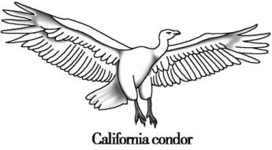

03-2016北京，C
California Condor's Shocking Recovery

California condors are North America's largest birds, with wing-length of up to 3 meters. In the 1980s, electrical lines and lead poisoning(铅中毒) nearly drove them to dying out. Now, electric shock training and medical treatment are helping to rescue these big birds.
In the late 1980s, the last few condors were taken from the wild to be bred(繁殖). Since 1992, there have been multiple reintroductions to the wild, and there are now more than 150 flying over California and nearby Arizona, Utah and Baja in Mexico.
Electrical lines have been killing them off.“As they go in to rest for the night, they just don't see the power lines,”says Bruce Rideout of San Diego Zoo. Their wings can bridge the gap between lines, resulting in electrocution(电死) if they touch two lines at once.
So scientists have come up with a shocking idea. Tall poles, placed in large training areas, teach the birds to stay clear of electrical lines by giving them a painful but undeadly electric shock. Before the training was introduced,66% of set-free birds died of electrocution. This has now dropped to 18%.
Lead poisoning has proved more difficult to deal with. When condors eat dead bodies of other animals containing lead, they absorb large quantities of lead. This affects their nervous systems and ability to produce baby birds, and can lead to kidney(肾) failure and death. So condors with high levels of lead are sent to Los Angeles Zoo, where they are treated with calcium EDTA, a chemical that removes lead from the blood over several days. This work is starting to pay off. The annual death rate for adult condors has dropped from 38% in 2000 to 5.4% in 2011.
Rideout's team thinks that the California condors' average survival time in the wild is now just under eight years.“Although these measures are not effective forever, they are vital for now,” he says. “They are truly good birds that are worth every effort we put into recovering them.”
全部题目与逐题讲解
- A.are active at night
- B.had to be bred in the wild
- C.are found only in California
- D.almost died out in the 1980s
查看答案与讲解
答案：D
1.D 细节理解题。由首段第二句可知,在20世纪80年代,由于电线和铅中毒,California condor这种鸟濒临灭绝。故选D。
- A.blocking condors' journey home
- B.big killers of California condors
- C.rest places for condors at night
- D.used to keep condors away
查看答案与讲解
答案：B
2.B 细节理解题。由第三段首句“一直以来电线在大量杀死这种鸟”可知答案选B。
- A.makes condors too nervous to fly
- B.has little effect on condors' kidneys
- C.can hardly be gotten rid of from condors' blood
- D.makes it difficult for condors to produce baby birds
查看答案与讲解
答案：D
3.D 推理判断题。由第五段第三句“这影响到它们的神经系统和它们繁育小鸟的能力”可推知,答案选D。
- A.the average survival time of condors is satisfactory
- B.Rideout's research interest lies in electric engineering
- C.the efforts to protect condors have brought good results
- D.researchers have found the final answers to the problem
查看答案与讲解
答案：C
4.C 主旨要义题。根据第五段中“This work is starting to pay off. The annual death rate for adult condors has dropped from 38% in 2000 to 5.4% in 2011.”可知答案为C项(保护秃鹰的努力取得了良好的效果)。
本篇暂无未重复外刊。